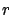
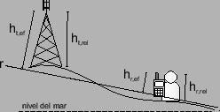

Siguiente: Cálculo del ángulo de
Subir: Algoritmos y cálculos implementados
Anterior: Búsqueda en el patrón
Índice General
El modelo de Okumura-Hata utiliza el concepto de alturas efectivas
como una forma de tomar en cuenta los efectos de reflexión y
dispersión. La definición original de Okumura de altura efectiva
consiste en considerar la misma sobre el promedio de alturas del
terreno entre 3 km y 15 km desde la radiobase hacia el móvil. Sin
embargo se ha mostrado [46] que existen otras definiciones
más eficientes. En la implementación de SAPO se decidió
utilizar el siguiente criterio; como primera opción se considera la
altura efectiva de la radiobase y del móvil como la distancia a la
recta resultado de ajustar mediante regresión lineal el perfil de
alturas de terreno entre la radiobase y el móvil (recta  en la
figura 10.3). Si alguna de las alturas obtenidas se
encuentra fuera del rango válido según las hipótesis del modelo, en
ese caso se consideran directamente las sobre el nivel del terreno
(alturas relativas).
La utilización de este algoritmo es opcional y configurable por el
usuario; en caso de no habilitarse las alturas consideradas serán
las relativas. Si se cuenta con un terreno llano la aplicación del
algoritmo incrementa los tiempos de cálculo y no repercute
considerablemente en los resultados.
Figura 10.3:
Definición de alturas efectivas
|

|
Siguiente: Cálculo del ángulo de
Subir: Algoritmos y cálculos implementados
Anterior: Búsqueda en el patrón
Índice General
SAPO